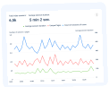
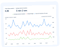

How to do a Website Audit to Improve SEO & Conversions
You will get an SMS with a link to the webinar
By sending up? you agree to our Conditions and Privacy Policy
Submit please
You will get an SMS with a link to the webinar
By sending up? you agree to our Conditions and Privacy Policy
Submit please
Thanks for registration. You'll get SMS within 30 seconds
Usability auditing with the Plerdy tool is a comprehensive expert assessment of your website based on a profound study of user behavior registered on it. Plerdy will provide you with crucial data based on which you will be able to run an efficient usability audit of your website, identify and fix SEO issues, and subsequently lead it to higher positions in search.
Thus, you'll compile a list of flaws in your website interface, navigation, and conversion path that can eventually affect its micro and macro conversion rates.
Trusted by some of the world's largest enterprises


 

6 Reasons to Use Plerdy Data for a Website Usability Audit